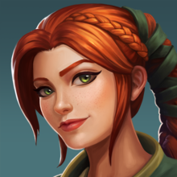
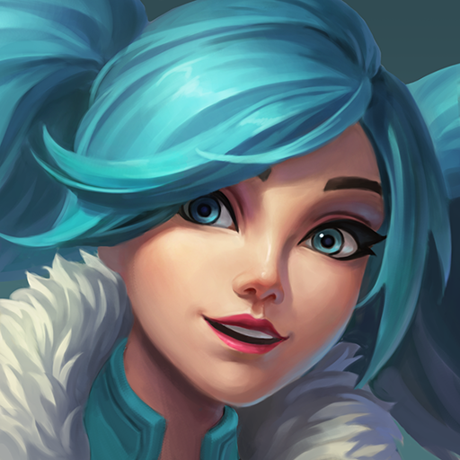
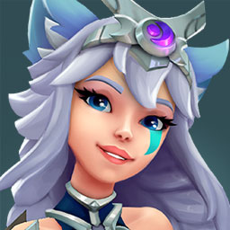
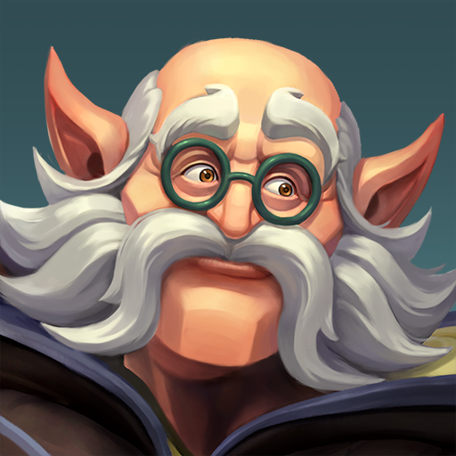

Paladins es un hero shoter en primera persona creado por hi rez hace 3 años, es un juego de equipos de 5 vs 5 en los cuales se escogen campeones/personajes con diferentes habilidades y roles.A pesar de ser un juego divertido no es tan famoso como otros del mismo genero, sus desarrolladores son gente que se esmera día a día para solucionar los erorres que otros programadores dejaron.
Este juego cuenta con mas de 40 personajes diferentes, todos tienen skin y emotes para personalizarlos al gusto de uno, ademas de contar con 5 tipos de modo de juegos, el mas popular de ellos es asedio, seguido de matanza, rey de la colina y tdm.
A continuacion habrá algunos de los campeones que existen.
| Campeones | ||
|---|---|---|
|  Cassie Es un campeon de rol de daño, el cual se dedica a causar el mayor daño posible a los tanques y a defenter al healer de los flancos enemigos. |
 Evie Es un flanco dedicado a cazar a los daños y mayor mente a los support para complicar el avance del enemigo. |
 Io Es un support que se dedica a curar a los aliados, mayor mente al tanque de punto. |
 Maeve Es un campeon de rol de flanco, igual se dedica a cazar a healer y daños para complicar la partida a los enemigos. |
 Terminus Es un campeon de tanque, los tanques son los que mas resisten pero tambien pueden ser offtank. |
 Torvald Tanque de punto el cual se dedica a capturar el punto sin flanquear o buscar kills. |